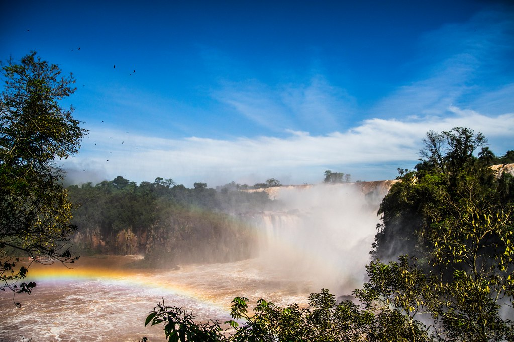

Christ the Redeemer - Rio de Janeiro
One of the New Seven Wonders of the World, Christ the Redeemer is a towering statue of Jesus Christ that overlooks the city of Rio de Janeiro. It is a must-visit for its spiritual significance and panoramic views of the city.
Amazon Rainforest - Manaus
The Amazon Rainforest is a haven of biodiversity and natural beauty. From river cruises to wildlife spotting, the lush greenery and vibrant ecosystem offer an unparalleled adventure.

Iguaçu Falls - Paraná
One of the largest and most awe-inspiring waterfalls in the world, Iguaçu Falls offers breathtaking views and exhilarating walks along the misty trails.
Salvador's Historic Center - Bahia
A UNESCO World Heritage Site, the historic center of Salvador boasts colorful colonial architecture, cobblestone streets, and a lively cultural scene steeped in Afro-Brazilian traditions.